Priceline Fare Brands
Creating a system to add over 200+ airline’s fares into the existing flights experience.
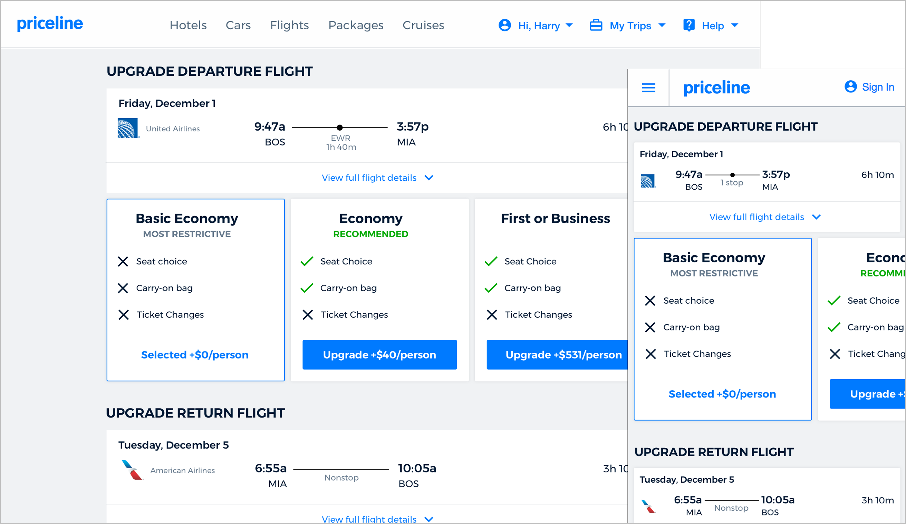
Strategic Challenge
Fare brands group airline ancillaries such as checked bags, Wi-Fi, and seat selection into different fare options. Priceline needed a templated approach that could support Delta, United, American, and eventually many more airline partners while still helping customers compare fares clearly.
Understanding the Customer
Which of the following do you expect to be included in the price of the ticket?
- 85% Carry-on bag
- 73% Snack
- 68% Non-alcoholic beverage
- 60% Checked bag
- 59% In-seat entertainment
- 54% Ability to choose a seat
What is most important to you when flying? Select one
- 31% Carry-on bag included
- 23% Checked bag included
- 18% Ability to choose seat
- 8% In-seat entertainment
- 4% Option to upgrade seat
- >2% Free snack and priority boarding for a fee
Which ancillaries are most important?
A survey was launched to the general public to understand which ancillaries customers value most and why they might consider one fare over another
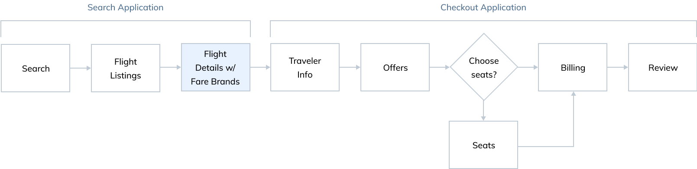
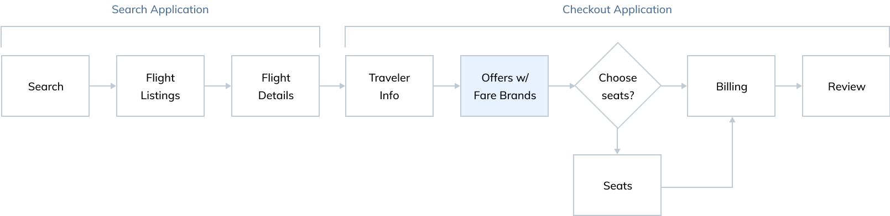
When in the purchase journey do customers prefer to choose their fare?
Two user flows were evaluated to determine the optimal stage for fare selection: early vs. late in the booking funnel. These flows served as a critical alignment tool for Engineering, who faced the technical constraint of integrating the price confirmation call for branded fares directly within the checkout application.
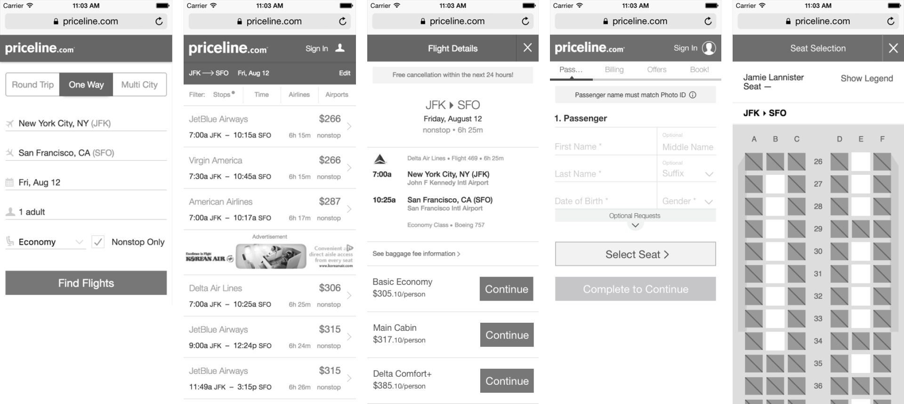
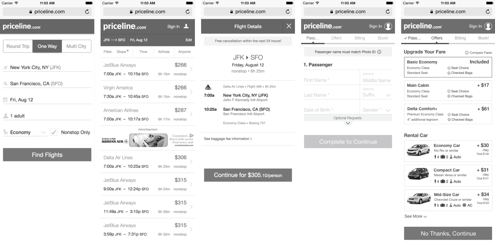
Despite the technical constraint of the checkout-based price confirmation call, user testing across both flows revealed a strong preference for early fare selection. These findings provided the confidence to pivot engineering efforts toward integrating price confirmation within the search application.
Customers who were interested in upgrading to a higher fare were more likely to do so if they were able to see the upgrade options early in the journey.
Launch fare brands in the checkout application, but begin BE work to move the price confirmation to the search application.
Delta roll-out
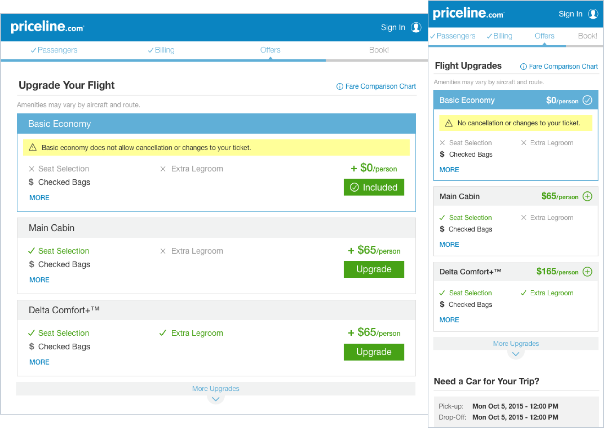
Initial UI
Branded fares launched sequentially, prioritizing top airline partners: Delta, American, and United. Delta served as the pilot, first introducing Basic Economy before a stable rollout of its full branded fare suite.
Results
increase in conversion after launching just basic economy
of premium economy cabin tickets were booked as a fare brand upgrade (opposed to searching for premium economy)
Adjusting the Purchase Journey
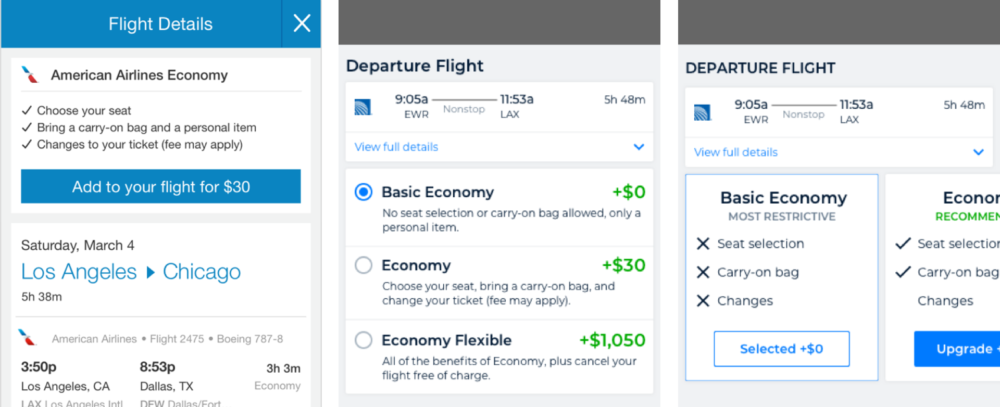
Explorations
Following the successful launch of branded fares for five additional airlines and subsequent checkout iterations, I began optimizing the top-of-funnel experience. After evaluating several options, I implemented a card-based display to integrate fare selection earlier in the user journey.
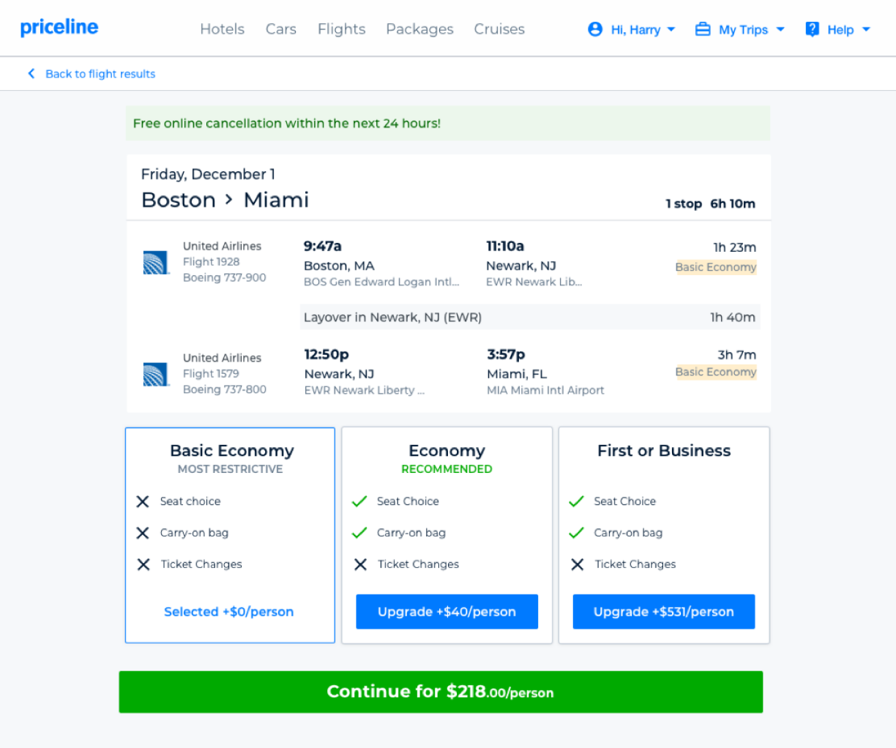
Results
conversion increase in bookings/day
While overall conversion increased, the amount of customers upgrading was down from the previous experience in checkout.
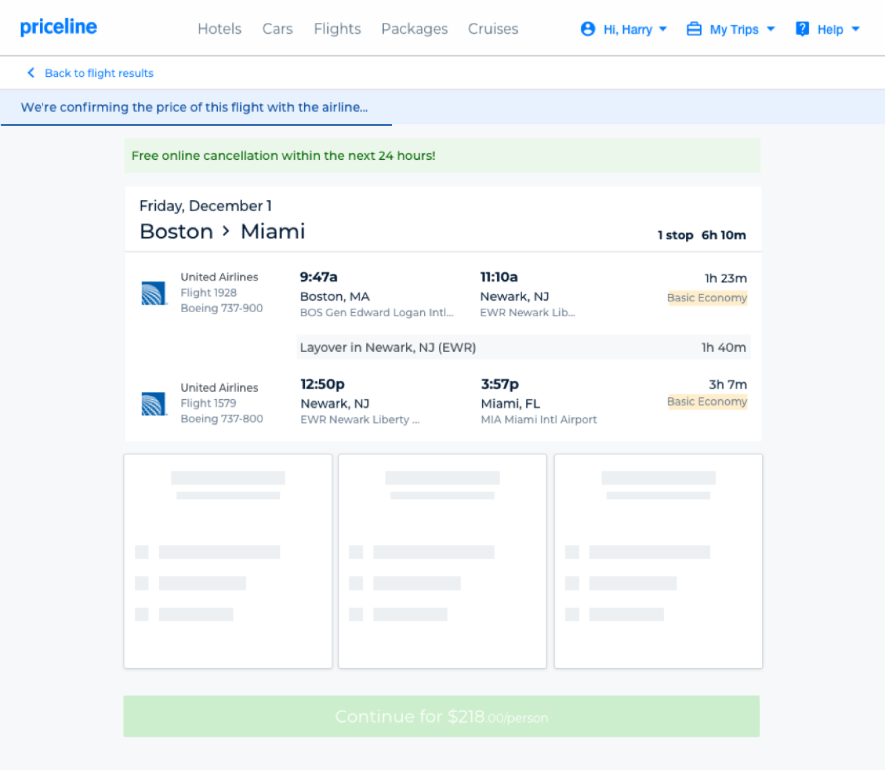
Iterated designs
The price confirmation call to load fare brands took longer to load than the flight details. I changed the experience to keep customers on the details page until the fares were returned and added extra feedback to communicate to what was happening to the customer.
rate of upgrade higher than what was in checkout
Iterate & test
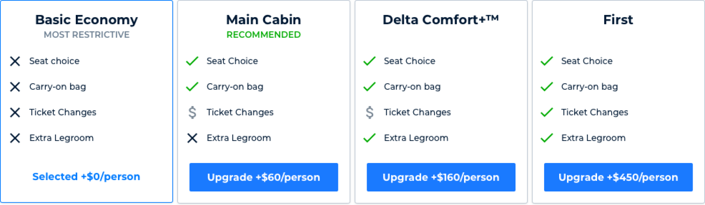
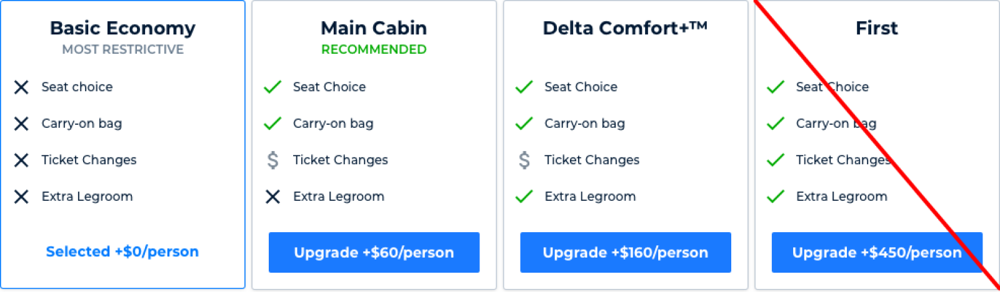
Iterative A/B testing
Hypothesis
As a customer I may be interested in upgrading to a higher fare if it's not too much money, but I don't want to upgrade $4,000 from a $1,000 flight. Because prices vary so much, saying only show two fare brand options or three options is too static an option.
Test
Multivariate test where customers are shown upgrades that are less than 200%, 250%, and 300% of base price.
Results
The 300% of base price variant was the most successful
Incremental bookings per day
Incremental contribution per day
Outcomes
- Created a scalable fare brands framework for Priceline’s airline partners
- Drove a 1.7% conversion lift with the initial Delta basic economy launch
- 65% of premium economy cabin customers upgraded through fare brands in checkout
- Brought fare brands experience into the mobile apps
Reflection
- This project required balancing customer clarity, business goals, airline partner expectations, and backend constraints. A positive outcome was gaining a much deeper understanding of Priceline’s air technology and how backend services shape frontend design possibilities.
- A challenge of this project was managing the expectations and requirements of the airline partners.